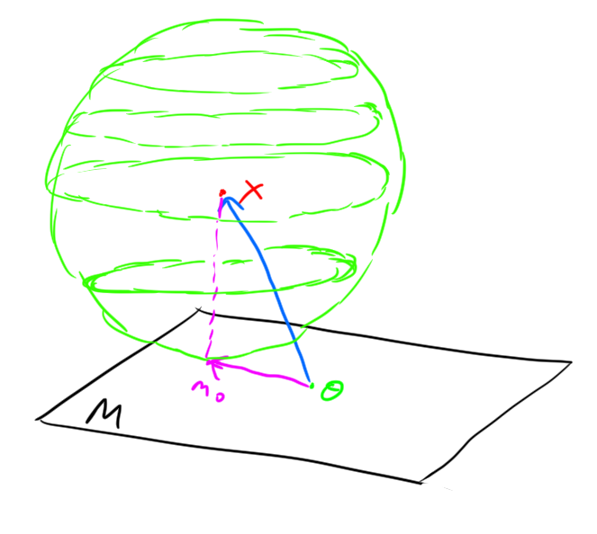
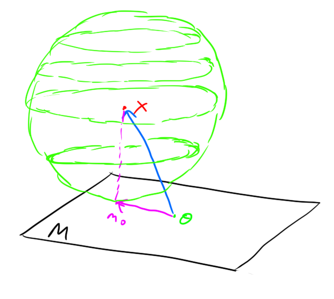
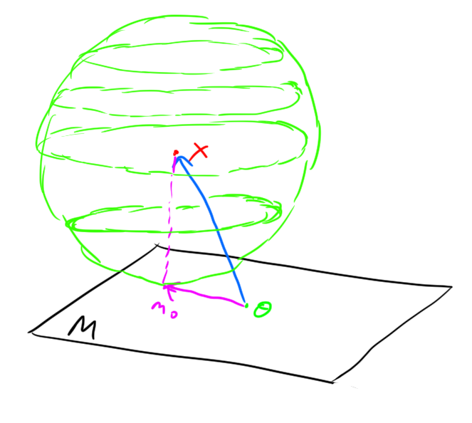

Example.  

The shortest distance from a point to a line is the perpendicular to the line. Right?…
In \(\mathbb{R}^n\) with the standard Euclidean norm (e.g. \(||(x,y)|| = \sqrt{x^2 + y^2}\) in \(\mathbb{R}^2\)) the error of the best approximator to a point within a subspace is perpendicular to the subspace. Here is a depiction of this for \(\mathbb{R}^2\) and \(\mathbb{R}^3\):
Example. 
Theorem. Let \(H\) be a Hilbert space, Let \(M\subset H\) be a closed subspace, let \(x \in H\). Then, there exists a unique \(m_0\) satisfying \[|| x - m_0 || = \inf_{m \in M} || x - m ||\] and \(m_0\) is characterized by \[x-m_0 \perp m \quad \forall m \in M.\]
Definition. The \(p\)-norm of a sequence is defined to be: \[||(\xi_1,\xi_2,\ldots)||_p = \left(\sum_{i\geq 1} |\xi_i|^p \right) ^ {1/p}.\]